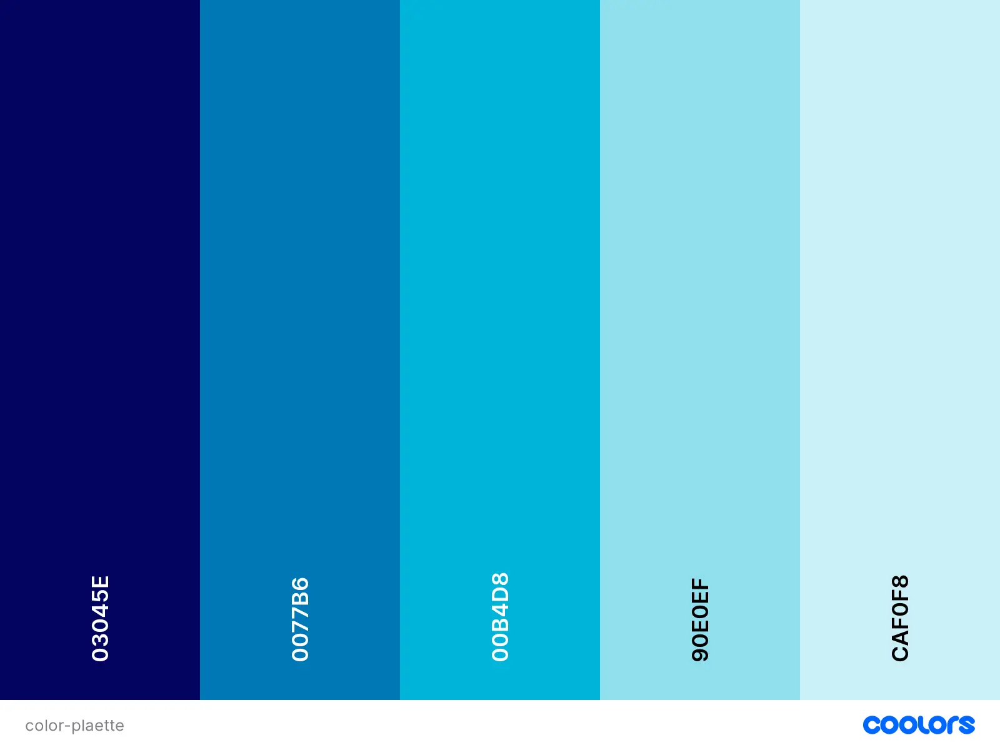

Rexburg Chamber
Rexburg chamber of the future
Home
Target Audience
Color Scheme
Typography
Color Scheme

Primary - #03045E
Secondary - #0077B6
Accent 1 - #00B4D8
Accent 2 - #90E0EF
Accent 3 - #CAF0F8